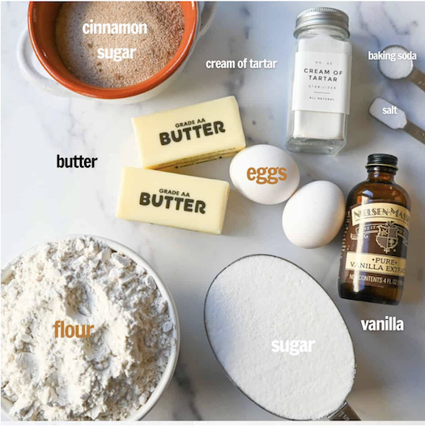
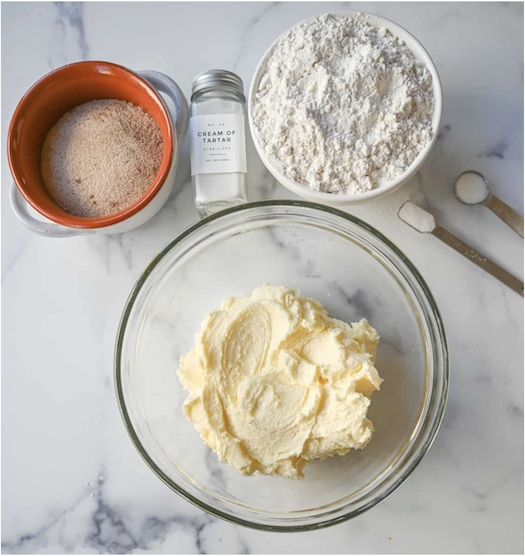
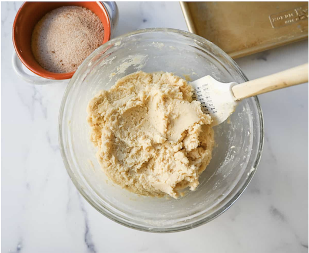
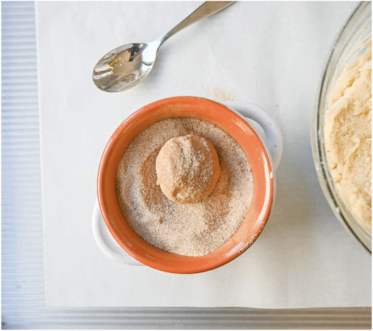
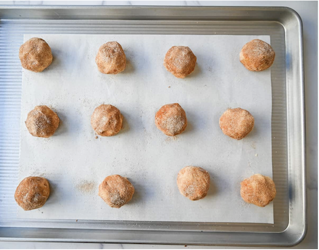
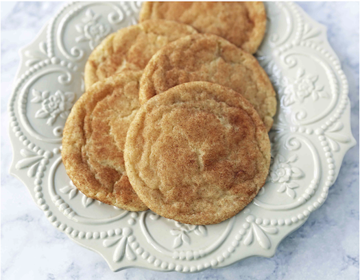

Butter — use softened, unsalted butter. If using salted butter, reduce salt to 1/2 teaspoon.
Sugar — this recipe calls for granulated sugar.
Eggs — use large eggs
Vanilla Extract — since this recipe calls for 2 teaspoons of vanilla extract, I suggest using a high-quality pure vanilla.
Flour — this recipe calls for all-purpose flour.
Cream or Tartar — this is what gives snickerdoodles that signature tangy flavor and chewy texture. See below for why it is important to use cream of tartar in snickerdoodles.
Baking Soda — when mixed with the cream of tartar, it helps the cookies to rise.
Salt — if using salted butter, reduce salt by 1/2 teaspoon.
Cinnamon Sugar — generously roll the cookie dough in the cinnamon sugar mixture before baking.





My favorite baking tools for perfect Snickerdoodle cookies are a light colored baking sheet, easy parchment paper sheets, and a Kitchenaid mixer.